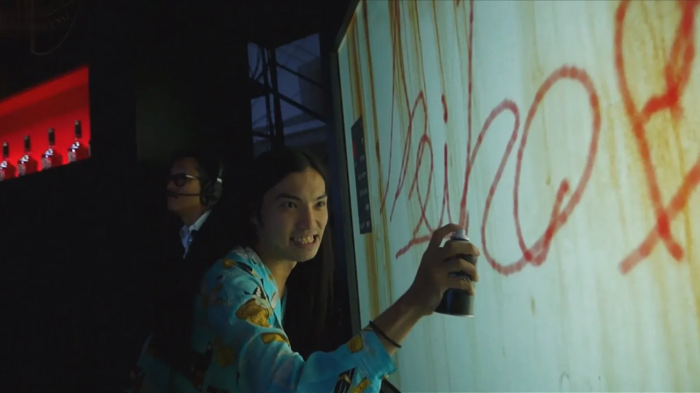
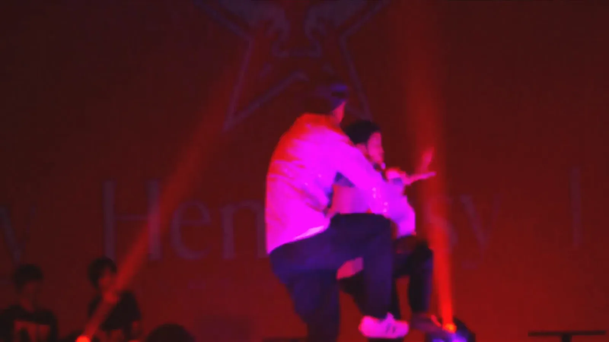
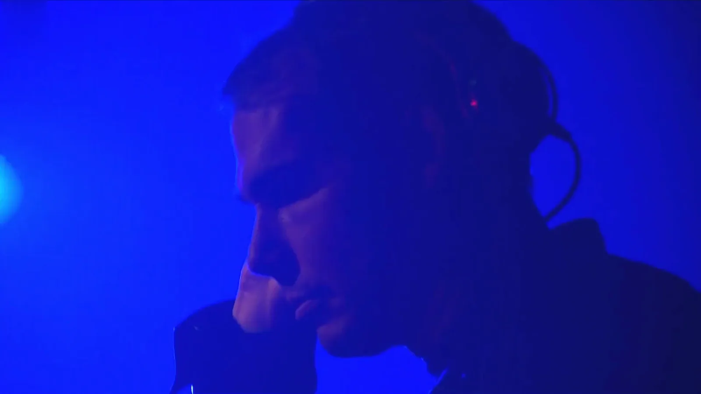

Back in the day,
with a street-art legend.
- Event
- Hennessy Very Special
by Shepard Fairey — launch - Headliner
- Shepard Fairey
(OBEY) — DJ set & host - When & Where
- Tokyo, Japan
2015 - Our Role
- Interactive digital
graffiti wall
(one of our earliest brand collabs)
One of the first, and still one of the best. Back in 2015, Graffiti+ ran the digital graffiti wall at the Tokyo launch of Hennessy Very Special by Shepard Fairey — the man behind OBEY. He headlined and DJed; guests painted his icons live on our wall.
Who is Shepard Fairey
If you know one living street artist, it's probably Shepard Fairey. He built the OBEY movement out of the "André the Giant Has a Posse" sticker campaign in the late '80s — a bit of guerrilla art that spread to walls in every city and became one of the most recognizable images in street culture. In 2008 he made the Obama "HOPE" poster, an image that jumped from the streets straight into political history and the Smithsonian. Fairey is one of the artists who dragged graffiti and street art from the alley into galleries, museums, and the mainstream — without ever losing the DIY, put-it-on-the-wall spirit it came from.
So when Hennessy tapped him for a Hennessy Very Special limited edition — a bottle wrapped in his unmistakable red, cream and black iconography — it was a genuine street-art moment, not a logo slap. And when they brought the launch to Tokyo, they wanted the room to feel like his world.
Our part in it
That's where Graffiti+ came in. We set up our interactive digital graffiti wall in the middle of the party — and guests picked up a can and painted live, many riffing straight on Fairey's visual language: the OBEY star, the peace-and-power icon, the Hennessy V.S marks, all rendered in that signature red. In a dark, packed Tokyo room, the wall glowed and never stopped moving.
Fairey himself headlined the night and played a DJ set — because of course he did; he's been a working DJ as long as he's been a working artist. Between the decks, the bottle, his art on every surface, and a wall full of people painting his icons, the whole room ran on the same current.
This one goes back. It was one of our first major brand collaborations — proof, early on, that a digital graffiti wall could hold its own next to a street-art legend and a house like Hennessy, and that people would always rather make the art than just look at it.
Eighteen years. Six continents. One idea, done right.
For eighteen years, Graffiti+ has been putting real creative tools in people's hands — in public, at scale, and always with cultural integrity.
Born from the roots of graffiti culture and built for anyone willing to pick up a custom spray can, the platform turns brand launches and cultural moments into shared canvases where writers and first-timers paint together in real time. From their home in Vancouver to projects across six continents — and collaborations from Hennessy to Nike and Samsung — Graffiti+ brings authentic, participatory experiences to audiences everywhere.
A street-art legend on the decks, his icons on the bottle, and a room full of people painting them live.


